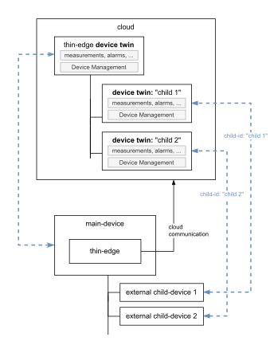
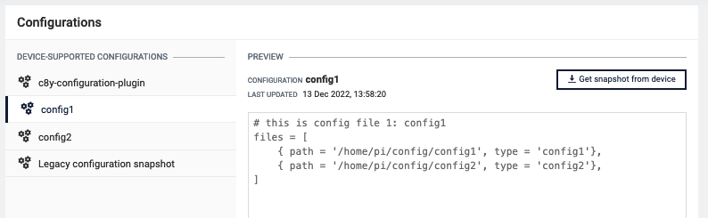
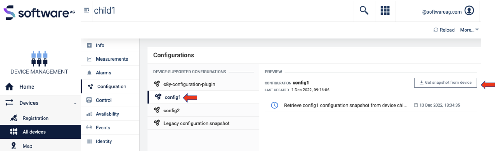
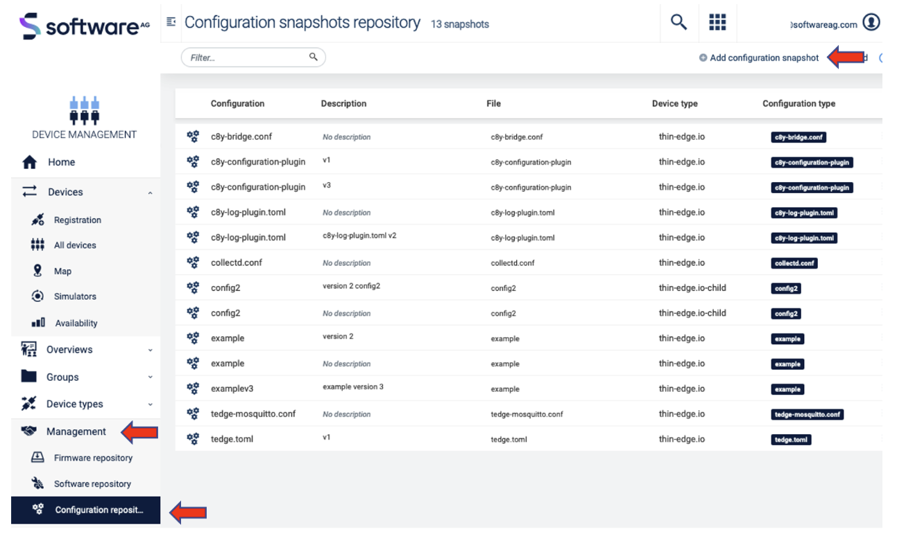
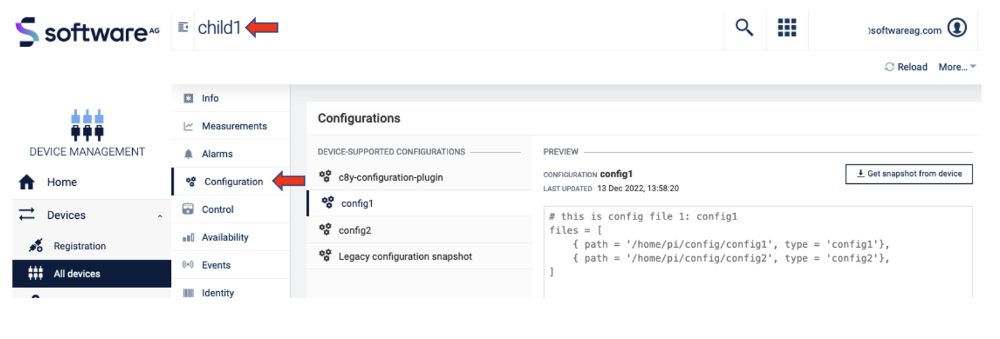
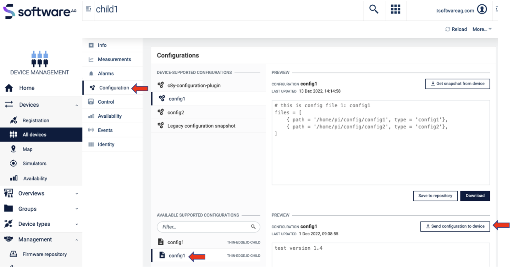

Configuration management on child-devices
After following this tutorial, you will know how to manage various configuration files on child-devices connected to a thin-edge device. You will learn how to perform the following configuration management operations on child devices:
- Fetch and view the snapshot of a configuration on a child-device from Cumulocity IoT cloud
- Update a configuration on the child-device from Cumulocity IoT cloud
Introduction
Let's first start with the definition of child-devices.
Thin-edge.io facilitates remote management of the device it is running on, as well as to devices that are connected to that device.
- the device where thin-edge.io is running on, is referred to as the main device or thin-edge device.
- thin-edge.io on the main-device establishes and manages all communication to the cloud.
- all devices connected to the main-device are referred to as external child-devices.
- each external child-device can be represented in the cloud with its individual device twin.
- a unique
child-idmakes the association between each external child-device and its device twin.
- a unique
- all telemetry data and device management functionality can appear in the context of the external child-device's device twin.
- containers or processes running on the main-device can also act like child-devices and they are referred to as logical child-devices.
The figure below illustrates the child-device concept.

Configuration management can be enabled for child-devices using the same c8y-configuration-plugin,
used for configuration management of the thin-edge device itself.
You can read more about this plugin and its usage here.
Another piece of software referred to as a child-device connector is also required to coordinate configuration management on the child device from the thin-edge device over the protocol that is used to communicate with it.
The child-device connector would handle the following responsibilities:
- Declare the supported configuration list to thin-edge.io.
- Handle configuration snapshot requests from thin-edge.io.
- Handle configuration update requests from thin-edge.io.
The supported configuration list is the list of configuration files on the child-device that needs to be managed from the cloud. Configuration management by thin-edge.io is enabled only for the files provided in this list. These declared configuration files can be fetched from the child device with configuration snapshot requests and can be updated with configuration update requests.
Handling the above-mentioned responsibilities involves multiple interactions with thin-edge.io:
- via MQTT to receive and respond to configuration management requests.
- via HTTP to upload/download files while handling those requests.
For example, during the bootstrapping/startup of the child-device, the child-device connector needs to upload the supported configuration list of the child-device to thin-edge.io by uploading a file using the HTTP file-transfer API of thin-edge.io, followed by an MQTT message informing thin-edge.io that the upload is complete. Similarly, handling a configuration snapshot or update request involves sending MQTT messages before and after the configuration file is uploaded/downloaded via HTTP to/from thin-edge.io.
The child-device connector is not part of the thin-edge.io installation and must be developed by the device developer. It can be written in any language that the device developer chooses. To ease this development, we have written a reference implementation in Python which can easily be adapted directly or replicated in the language of your choice, for your device type. The key thing to focus on in the implementation is the interaction with the external device to fetch/update the configuration files over the protocol that the device supports. The rest of the MQTT and HTTP interactions would remain the same.
Since child-device connectors typically run on thin-edge.io device itself, these APIs can be accessed via a local IP or even 127.0.0.1.
In cases where the child-device connector is deployed on the external child-device itself,
the MQTT and HTTP APIs of thin-edge.io need to be accessed over the network using its IP address,
which is configured using the thin-edge.io configuration settings mqtt.external.bind.address or mqtt.bind.address.
The MQTT APIs are exposed via port 1883 and the HTTP APIs are exposed via port 8000.
In this tutorial 127.0.0.1. is used.
Prerequisites
To follow this tutorial, you only need the following:
- A Cumulocity IoT tenant.
- A device where thin-edge.io is installed. Any device with a Debian-based OS (Raspbian, Ubuntu etc) can be used. For example, a Raspberry Pi, your development machine or even a virtual machine can be used.
- A child-device connector implementation.
You can either use the reference implementation adapted for your child device or develop one on your own.
If you just want to understand the child device connector contract,
you may even manually execute the
curlandmosquittocommands shown in the following sections. To use themosquittocommands, it must be installed withsudo apt-get install mosquitto-clients. - A device to run the child-device connector on.
It can be run either on the main device itself or on the external child-device.
If you're just running the
curlandmosquittocommands directly, they even be run directly from the main device itself.
Steps
This tutorial is divided into 3 main steps:
Step 1: Bootstrap the child device
In this step, a child-device with its supported configuration list will be created in Cumulocity IoT, with the help of thin-edge.io, during the startup/bootstrap phase of the child-device connector.
Step 2: Get configuration snapshot from the child device
In this step, configuration files from a child-device will be requested to make them visible in Cumulocity IoT.
Step 3: Update configuration on the child device
In this step, configuration files from a child-device will be updated with the updated configuration file pushed from Cumulocity IoT to the child-device via thin-edge.
The examples in this document uses curl and mosquitto commands just for representational purposes.
In a realistic deployment, the child device connector will be running as a daemon,
performing configuration management operations with thin-edge over its MQTT and HTTP APIs.
Step 1: Bootstrap the child device
In this step, a child-device with its supported configuration list will be created in Cumulocity using thin-edge.io.
Follow these steps to bootstrap the child device:
-
Create a
c8y-configuration-plugin.tomlfile that contains the supported configuration list of the child-device i.e. a list of configuration files in the same format as specified in the configuration management documentation as follows:files = [ { path = '/path/to/some/config', type = 'config1'}, ]pathis the full path to the configuration file on the child-device file system.typeis a unique alias for each file entry which will be used to represent that file in Cumulocity IoT.
Example:
files = [ { path = '/home/pi/config/config1', type = 'config1'}, { path = '/home/pi/config/config2', type = 'config2'}, ]Update these paths with some realistic paths on your device, or create these files with some dummy content.
This is not the c8y-configuration-plugin.toml file which is used for configuration management of the thin-edge.io main device.
This is a separate file, in the same format, required for each child-device, with its supported configuration list.
-
Upload this file to thin-edge.io via HTTP
The child-device connector needs to upload this file to thin-edge.io with an HTTP PUT request to the URL:
http://{tedge-ip}:8000/tedge/file-transfer/{child-id}/c8y-configuration-plugin{tedge-ip}is the IP of the thin-edge.io device which is configured asmqtt.external.bind.addressormqtt.bind.addressor127.0.0.1if neither is configured.{child-id}is the child-device-id.
Example:
curl -X PUT --data-binary @/home/pi/config/c8y-configuration-plugin.toml http://127.0.0.1:8000/tedge/file-transfer/child1/c8y-configuration-plugin -
Notify thin-edge.io about the upload via MQTT.
Once the upload is complete, the connector should notify thin-edge.io about the upload by sending the following MQTT message:
Topic:
tedge/{child-d}/commands/res/config_snapshotPayload:
{ "type": "c8y-configuration-plugin", "path": "/child/local/fs/path" }Example:
mosquitto_pub -h 127.0.0.1 -t "tedge/child1/commands/res/config_snapshot" -m '{"path": "", "type":"c8y-configuration-plugin"}' -
Verify that the configuration list appears in Cumulocity under the child device's
Configurationtab underDEVICE-SUPPORTED CONFIGURATIONSas follows:
Step 2: Get configuration snapshot from the child device
Following these steps, a configuration file from the child-device will be requested to make them visible in Cumulocity IoT:
-
Subscribe to, and receive config snapshot requests via MQTT:
mosquitto_sub -h 127.0.0.1 -t "tedge/{child-id}/commands/req/config_snapshot"The
config_snapshotrequests will be received by this subscriber. -
In Cumulocity IoT, navigate to
Device Management->Devices->All Devices-> select the thin-edge device ->Child devices-> select the child-device (child1) ->Configuration -
Select the config file type (
config1) from the list of configuration files under theDEVICE-SUPPORTED CONFIGURATIONSand then click on theGet snapshot from devicebutton.
This will trigger a
config_snapshotrequest to the child-device via MQTT which will be received by the subscriber spawned in step. 1 as follows:Example:
{ "url":"http://127.0.0.1:8000/tedge/file-transfer/child1/config_snapshot/config1", "path":"/home/pi/config/config1", "type":"config1" }
After receiving this request, the responses in the next three steps must be sent within 60 seconds, else the operation will fail with a timeout.
-
After receiving the request, the child-device connector may optionally acknowledge the receipt of the request by sending an "executing" MQTT status message, as follows:
Topic:
tedge/{child-d}/commands/res/config_snapshotPayload:
{ "status": "executing", "type": "{config-type}", "path": "/child/local/fs/path" }Example:
mosquitto_pub -h 127.0.0.1 -t "tedge/child1/commands/res/config_snapshot" -m '{"status": "executing", "path": "/home/pi/config/config1", "type": "config1"}'
Sending the executing status will reset the operation timeout window.
The timer can be reset any number of times by sending this response.
-
Upload the requested config file to the URL received in the request via HTTP.
After sending the 'executing' status message, the connector must upload the requested configuration file content to the URL received in the request with an HTTP PUT request.
curl -X PUT --data-binary @/home/pi/config/config2 http://127.0.0.1:8000/tedge/file-transfer/child1/config_snapshot/config1 -
Once the upload is complete, send a "successful" status message via MQTT as follows:
Topic:
tedge/{child-d}/commands/res/config_snapshotPayload:
{ "status": "successful", "type": "{config-type}", "path": "/child/local/fs/path" }Example:
mosquitto_pub -h localhost -t "tedge/child1/commands/res/config_snapshot" -m '{"status": "successful", "path": "/home/pi/config/config1", "type": "config1"}'
Step 3: Update configuration on the child device
Performing config update is an 8-step process:
-
Subscribe to, and receive config update requests via MQTT.
Example:
mosquitto_sub -h 127.0.0.1 -t "tedge/child1/commands/req/config_update" -
In Cumulocity IoT, go to
device management->Management->Configuration repository->Add configuration snapshotand fill in the fields in the pop-up. Uploading a simple text file will be sufficient as an example. Give it thenameandtypeas config1.
-
Click on
Devices->All Devices, then click on your device. Then click onchild-devices-> then click on the child-device (child1) defined in Step 1 Bootstrap the child-device and then click onConfigurationand on your config file (config1).
-
In the column AVAILABLE SUPPORTED CONFIGURATIONS click on the previously added/uploaded configuration snapshot (config1) and click on Send configuration to device. This will trigger a config snapshot request to the child-device via MQTT.

The subscriber spawned in step 1 will receive the following request on
tedge/child1/commands/req/config_updatetopic.{ "url": "http://127.0.0.1:8000/tedge/file-transfer/child1/config_update/config1", "path": "/home/pi/config/config1", "type": "config1" }
After receiving this request, the responses in the next three steps must be sent within 60 seconds, else the operation will fail with a timeout.
-
Optionally send an "executing" operation status update to acknowledge the receipt of the request via MQTT as follows:
Topic:
tedge/{child-d}/commands/res/config_updatePayload:
{ "status": "executing", "type": "{config-type}", "path": "/child/local/fs/path" }Example:
mosquitto_pub -h 127.0.0.1 -t "tedge/child1/commands/res/config_update" -m '{"status": "executing", "path": "/home/pi/config/config1", "type": "config1"}'
Sending the executing status will reset the operation timeout window.
The timer can be reset any number of times by sending this response.
-
Download the config file update from the URL received in the request via HTTP.
After sending the "executing" status message, the connector must download the configuration file update from the
URLreceived in the request with anHTTP GETrequest. The connector can then apply the downloaded configuration file update on the device.curl http://127.0.0.1:8000/tedge/file-transfer/child1/config_update/config1 --output config1 -
Apply the config file update on the child-device
The connector can then apply the downloaded configuration file update on the device.
-
Send a "successful" operation status update via MQTT
Once the update is applied, send a "successful" MQTT status message as follows:
Topic:
tedge/{child-d}/commands/res/config_updatePayload:
{ "status": "successful", "type": "{config-type}", "path": "/child/local/fs/path" }Example:
mosquitto_pub -h 127.0.0.1 -t "tedge/child1/commands/res/config_update" -m '{"status": "successful", "path": "/home/pi/config/config1", "type": "config1"}'If there are any failures while downloading and applying the update, fail the operation in Cumulocity IoT by sending a "failed" status update with the
reasonto the same topic as follows:{ "status": "failed", "type": "{config-type}", "path": "/child/local/fs/path", "reason": "Download failed" }Example:
mosquitto_pub -h 127.0.0.1 -t "tedge/child1/commands/res/config_update" -m '{"status": "failed", "reason": "Download failed", "path": "/home/pi/config/config1", "type": "config1"}'
References
- Configuration Management documentation
- Reference implementation of a child-device connector written in Python to demonstrate the contract described in this document.
- How to enable configuration management on child-devices